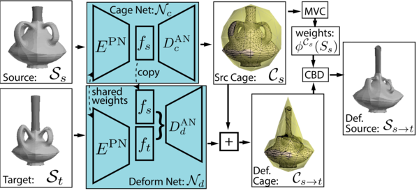
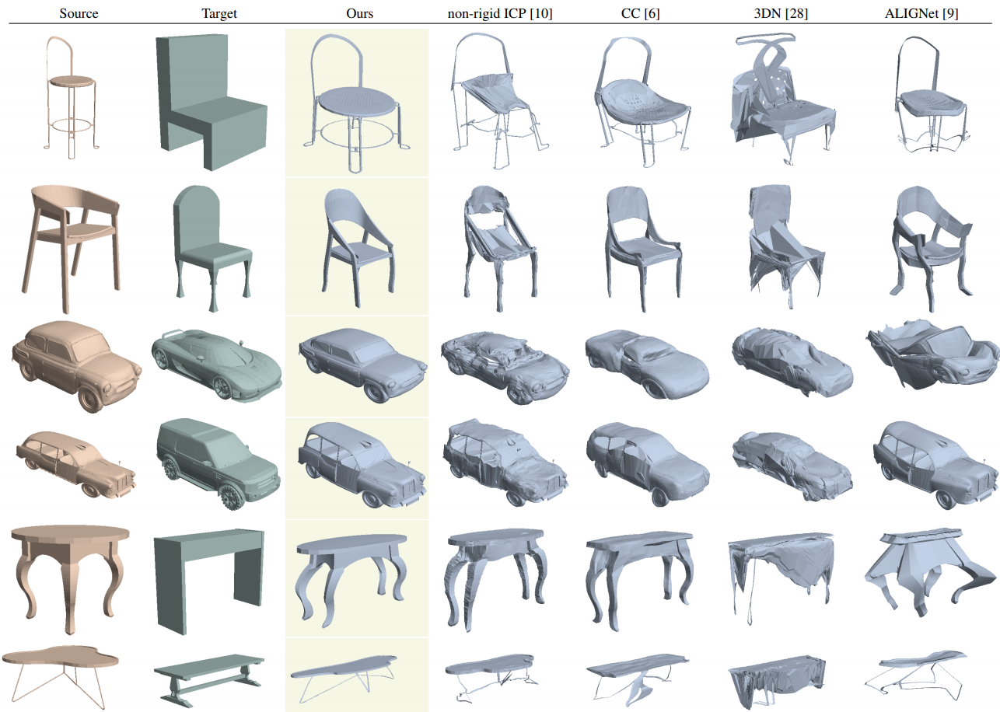
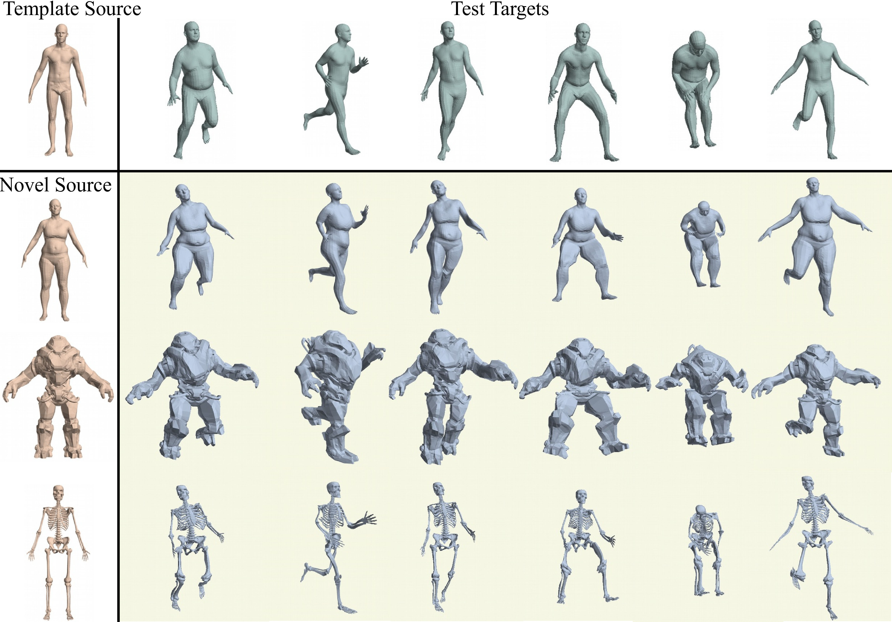
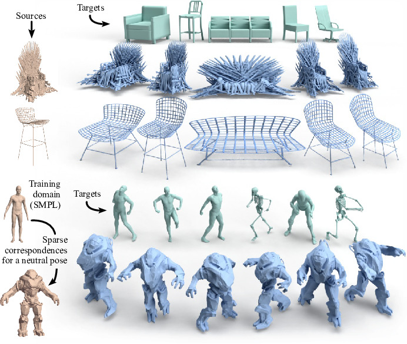

We propose a novel learnable representation for detail-preserving shape deformation. The goal of our method is to warp a source shape to match the general structure of a target shape, while preserving the surface details of the source. Our method extends a traditional cage-based deformation technique, where the source shape is enclosed by a coarse control mesh termed cage, and translations prescribed on the cage vertices are interpolated to any point on the source mesh via special weight functions. The use of this sparse cage scaffolding enables preserving surface details regardless of the shape’s intricacy and topology. Our key contribution is a novel neural network architecture for predicting deformations by controlling the cage. We incorporate a differentiable cage-based deformation module in our architecture, and train our network end-to-end. Our method can be trained with common collections of 3D models in an unsupervised fashion, without any cage-specific annotations. We demonstrate the utility of our method for synthesizing shape variations and deformation transfer.
 The key of our method is reducing the degrees of freedom of the deformation space by extending the traditional cage-based deformation technique.
We use our method to learn a meaningful deformation space over a collection of shapes within the same category, and then use random pairs of source and target shapes to synthesize plausible variations of artist-generated assets. 
 We first learn the cage deformation space for a template source shape (top left) with known pose and body shape variations. Then, we annotate predefined landmarks on new characters in neutral poses (left column, rows 2-4). At test time, given novel target poses (top row, green) without known correspondences to the template, we transfer their poses to the other characters (blue).
Due to the agnostic nature of cage-deformations to the underlying shape, we are able to seamlessly combine machine learning and traditional geometry processing to generalize to never-observed characters, even if the novel source and target characters are morphologically very different from the both the template source.

This is the talk I’ll be giving virtually for CVPR2020.